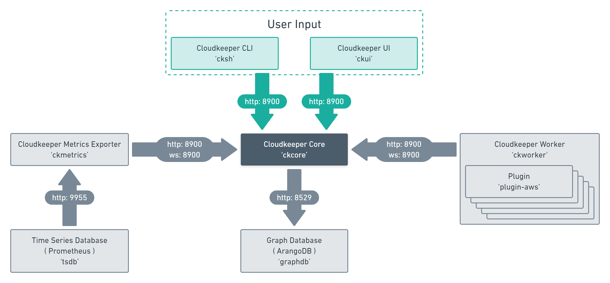

Components
These are the moving parts of Cloudkeeper. We will now guide you through the setup and run procedure for each one. ckworker plugins have no extra section, as they are integrated via ckworker
ckcore: the platform maintaining the MultiDiGraph.
cksh: the Cloudkeeper shell to interact with the core.
ckmetrics is a Prometheus exporter.
ckworker provides workers that load plugins to perform collect and cleanup operations.
ckworker plugins are a collection of worker plugins like AWS
To give you a better understanding of how cloudkeepers components interact with each other and where prometheus and arangoDB come in, we have prepared this visualisation for you.
ckcore
The Cloudkeeper graph platform ckcore is the persistence and query backend of Cloudkeeper. It maintains the graph
of resources and provides APIs to update and access them. Within ckcore there are workflows consisting of steps
that result in actions like collect, cleanup or generate_metrics. These actions are being received by components
like ckworker and ckmetrics.
You can find more information in the section about Spotlight: API.
cksh
cksh starts the Cloudkeeper shell. It is used to interact with ckcore. It allows you to explore the graph, find resources of interest, mark them for cleanup, fix their tagging, aggregate over their metadata to create metrics and format the output for use in a 3rd party script or system.
ckmetrics
ckmetrics takes ckcore graph data and runs aggregation functions on it. Those aggregated metrics are then exposed in a (Optional) Run Prometheus compatible format.
ckworker
ckworker does all the collection and cleanup work in Cloudkeeper. It is connected to ckcore over a websocket connection and waits for instructions. By default it subscribes to the collect and cleanup actions as well as tag tasks.
ckworker loads collector ckworker plugins like AWS, GCP, Slack, Onelogin, etc. Only those plugins have knowledge about how to communicate with each cloud. How to collect resources and how to clean them up.
There can be one or more instances of ckworker in a Cloudkeeper deployment. A single ckworker can collect many clouds or you could have multiple ckworker collecting one cloud or even one account in one cloud each.
Once ckworker is started you do not have to interact with it at all. It will just sit there, wait for work and do its job.